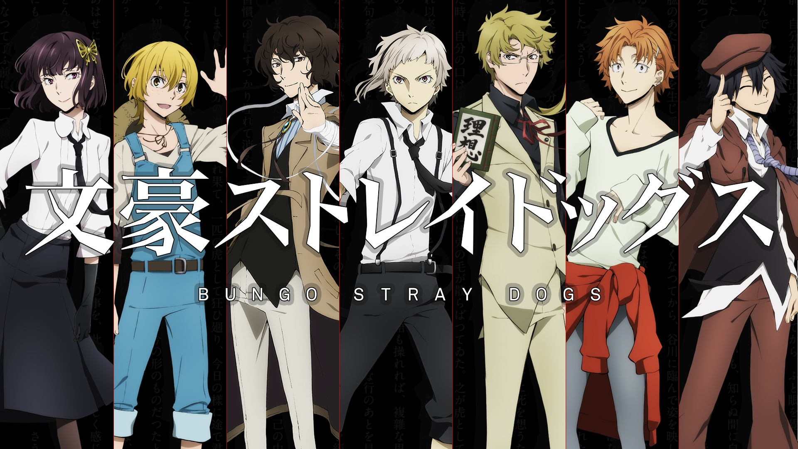
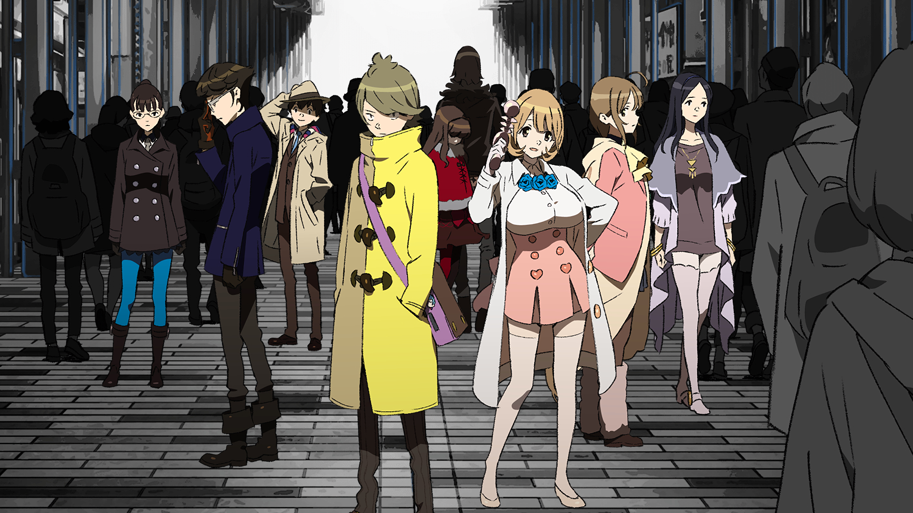
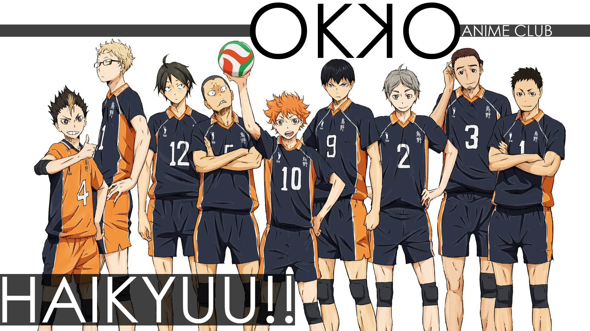
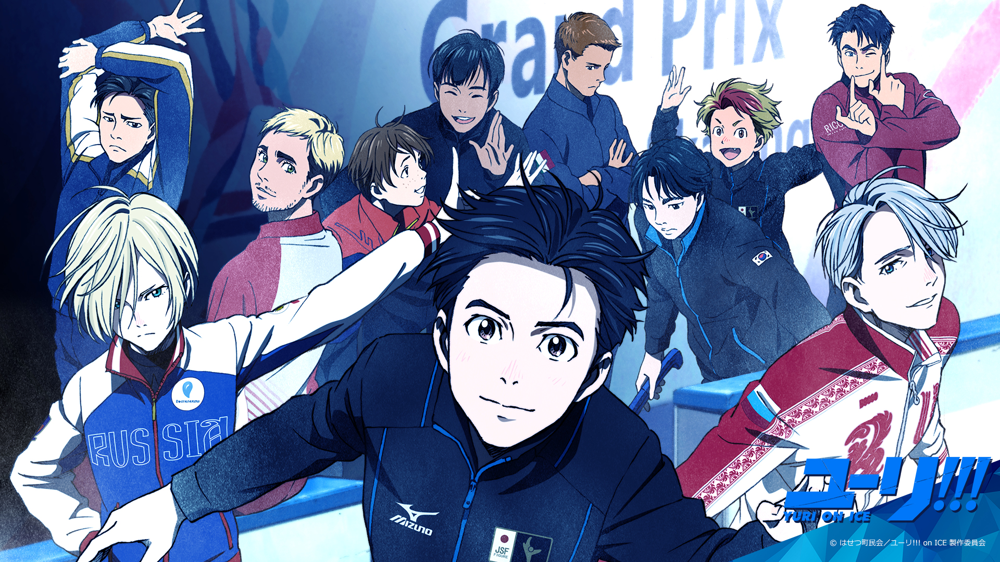
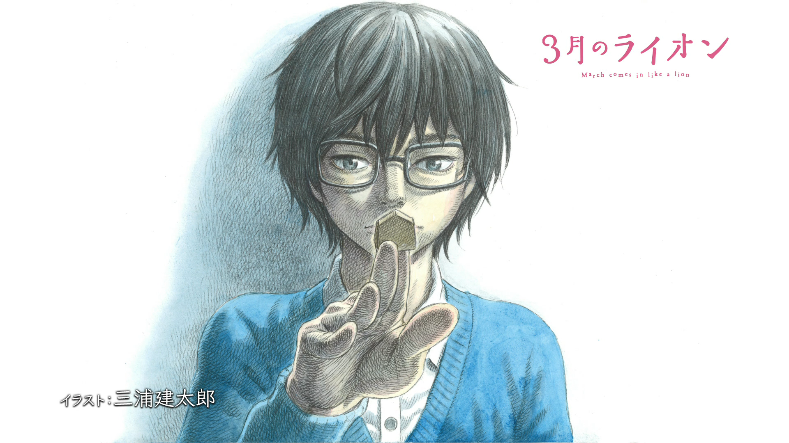

Bungou Stray Dogs 2

Nakajima Atsushi was kicked out of his orphanage, and now he has no place to go and no food. While he is standing by a river, on the brink of starvation, he rescues a man whimsically attempting suicide. That man is Dazai Osamu, and he and his partner Kunikida are members of a very special detective agency. They have supernatural powers and deal with cases that are too dangerous for the police or the military. They're tracking down a tiger that has appeared in the area recently, around the time Atsushi came to the area. The tiger seems to have a connection to Atsushi, and by the time the case is solved, it is clear that Atsushi's future will involve much more of Dazai and the rest of the detectives!
Occultic;Nine

The "paranormal science" story follows nine idiosyncratic individuals, linked by the "Choujou Kagaku Kirikiri Basara" occult summary blog run by 17-year-old second-year high school student Yuuta Gamon. Little incongruities that occur around these nine eventually lead to a larger, unimaginable event that may alter what is considered common sense in this world.
Haikyuu!! 3

Inspired after watching a volleyball ace nicknamed "Little Giant" in action, small-statured Shouyou Hinata revives the volleyball club at his middle school. The newly-formed team even makes it to a tournament; however, their first match turns out to be their last when they are brutally squashed by the "King of the Court," Tobio Kageyama. Hinata vows to surpass Kageyama, and so after graduating from middle school, he joins Karasuno High School's volleyball team—only to find that his sworn rival, Kageyama, is now his teammate. Thanks to his short height, Hinata struggles to find his role on the team, even with his superior jumping power. Surprisingly, Kageyama has his own problems that only Hinata can help with, and learning to work together appears to be the only way for the team to be successful. Based on Haruichi Furudate's popular shounen manga of the same name, Haikyuu!! is an exhilarating and emotional sports comedy following two determined athletes as they attempt to patch a heated rivalry in order to make their high school volleyball team the best in Japan.
Yuri!!! on ICE

Reeling from his crushing defeat at the Grand Prix Finale, Yuuri Katsuki, once Japan's most promising figure skater, returns to his family home to assess his options for the future. At age 23, Yuuri's window for success in skating is closing rapidly, and his love of pork cutlets and aptitude for gaining weight are not helping either. However, Yuuri finds himself in the spotlight when a video of him performing a routine previously executed by five-time world champion, Victor Nikiforov, suddenly goes viral. In fact, Victor himself abruptly appears at Yuuri's house and offers to be his mentor. As one of his biggest fans, Yuuri eagerly accepts, kicking off his journey to make it back onto the world stage. But the competition is fierce, as the rising star from Russia, Yuri Plisetsky, is relentlessly determined to defeat Yuuri and win back Victor's tutelage.
3-gatsu no Lion

Rei Kiriyama is a 17-year-old boy who recently started living alone, financed by his salary as a professional Shogi player. Despite his independence, however, he's yet to mature emotionally, and his problems continue to haunt him in his daily life. His relationship with his adoptive family is strained, and he has difficulties interacting with his fellow high school students. Meanwhile, his professional career has entered a slump. Burdened with the heavy expectations placed on him as the fifth to become pro in middle school, his wins and losses are fluctuating as his record and progression into the ranks begin to stagnate. Acquainted with Rei are the three Kawamoto sisters: Akari, Hinata, and Momo. Unlike Rei, they live happily in their modest home, which they warmly welcome Rei into as if he were one of their own. Despite his reservations about becoming too close to the family, he frequently visits, interacting with them and receiving the kind of care and affection he never quite had while under his foster home. This is the story of Rei's triumphs and failures, relationships new and old, and his growth as a person.